Snapshot técnico sanitizado • 21 de abril de 2026
Produtos, automações e sistemas em produção com foco em IA, mídia, workflows e operação real.
Este portfolio foi estruturado para mostrar profundidade de produto, engenharia e operação sem expor segredos, credenciais, payloads sensíveis, chaves, paths privados ou detalhes internos de negócio. Ele reúne a camada pública, a arquitetura e a prova operacional de um ecossistema que passa por frontend, mobile, FastAPI, Supabase, n8n, Docker, VPS, processamento de áudio e automação multimídia.
Mapa do documento
Ordem do portfolio
01
FelpaMusic Mix & Master
Plataforma principal de Mix & Master com IA, organizada em projetos, com fluxo guiado por chat, comparação com referência, múltiplos modos de processamento e camada própria de runtime para acompanhar cada etapa do processamento. Este é o case central do portfolio porque une interface de produto, serviços especializados, automação e infraestrutura operacional.
Vite
React
TypeScript
Tailwind
Supabase
React Query
Radix UI
n8n
REAPER proxies
Docker
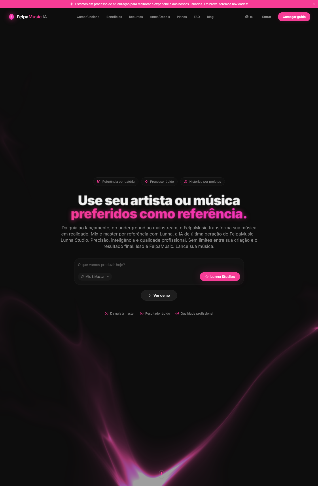
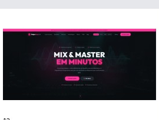
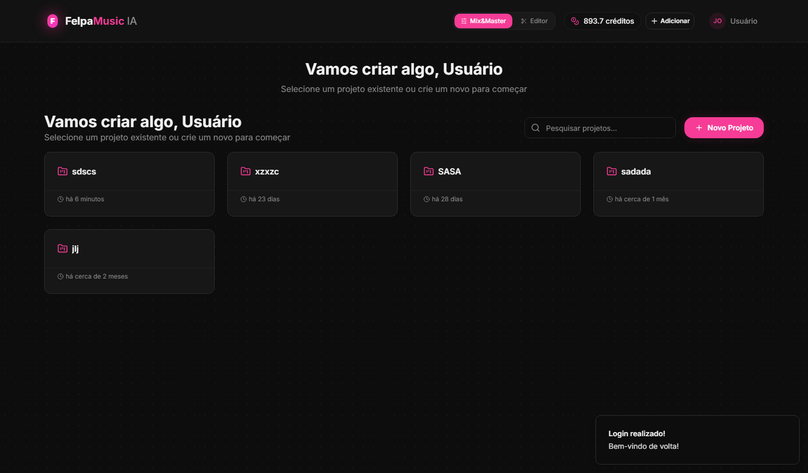
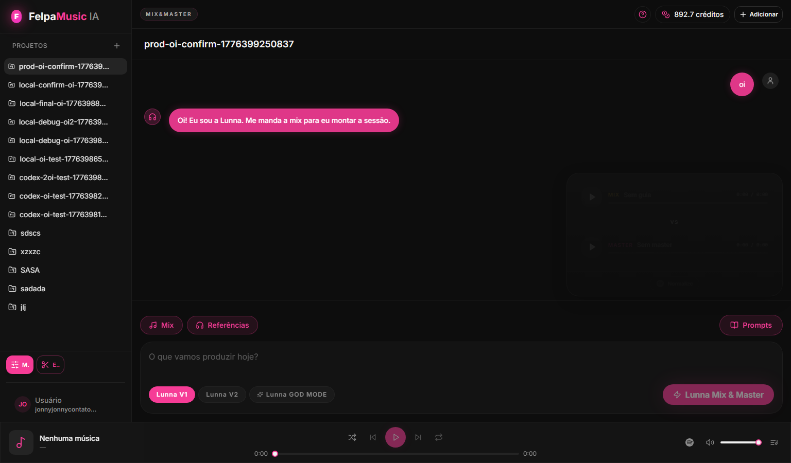
Escopo de produto
- Entrada por projeto com persistência de contexto e histórico
- Chat guiado para orientar envio de mix, referência e ajustes
- Comparação e player global para mix/master durante o fluxo
- Controle de créditos, estado de processamento e versões de saída
- Modos diferentes de processamento: V1, V2 e GOD MODE
Stack do frontend
- React + TypeScript com build em Vite
- Tailwind CSS, Radix UI e framer-motion para UI e interação
- React Router para navegação entre home, workspace e módulos internos
- React Query + Supabase client para sincronização com runtime e storage
- Playwright como parte do pacote de verificação do stack
Lunna como camada de orquestração
A Lunna atua como interface de orquestração para o fluxo do Mix & Master. O objetivo não é somente “responder” no chat, mas organizar entrada, validar estado do projeto, iniciar processamento, devolver mensagens consistentes e conduzir o usuário ao próximo passo.
- Mensageria deduplicada e reparo de texto para reduzir ruído de fluxo
- Leitura de progresso de runtime e conversão disso em feedback útil
- Separação entre entrada do usuário, resposta do orquestrador e processamento
APIs e serviços conectados
- Control plane dedicado de MixMaster GOD MODE
- Proxies especializados para motor de mix e motor de master
- Serviços de stem split, análise de volumes e afinação como apoio ao ecossistema
- Storage e estado persistente para projetos, arquivos e progresso
Fluxos n8n
Snapshot atual da VPS indica 12 workflows ligados à família MixMaster. Eles cobrem as camadas de orquestração, processamento, retroalimentação de estado e variantes.
- Orquestradores separados por geração/modo
- Processadores com compatibilidade entre V2 e GOD MODE
- Integração entre frontend, runtime e motores especializados
Controles e botões que importam
Mixenvio da música principal para o fluxo
Referênciasanexa a estética sonora de comparação
Promptsatalhos e inputs guiados para orientar a sessão
Lunna V1 / V2 / GOD MODEtroca do perfil de processamento e contrato de entrega
Novo Projetoabre um workspace limpo para nova sessão
Créditosregra comercial embutida no fluxo do produto
02
FelpaMusic Editor
Editor de áudio no navegador, integrado ao restante do produto, pensado para preparar material antes do envio ao Mix & Master. O módulo reúne timeline, playback, edição de clipes, stem split, aplicação de volume inteligente, afinação e export/render.
React
TypeScript
Timeline UI
Audio mixdown
Stem Splitter
Magic Volumes
Felpa Tune
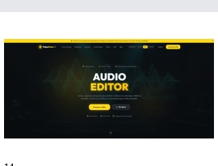
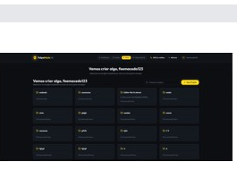
Funcionalidades do editor
- Upload e adição de múltiplos arquivos/stems
- Ferramentas de seleção, corte, trim, range, loop e seek
- Mute, solo, volume, pan, cor, lock e duplicação por track
- Mixdown no navegador e download do resultado renderizado
- Envio direto do resultado do Editor para um novo projeto de Mix & Master
Submódulos e integrações
- Stem Splitter Panel: separação de stems para abrir o material em camadas
- Magic Volumes: ajuste guiado de ganho por stem/faixa
- Felpa Tune: camada dedicada para afinação e presets por track
- Playback Controls: execução e navegação de sessão dentro do próprio editor
Serviços de apoio
- APIs de stem split em versões distintas para cenários diferentes
- API de análise de volumes com fallback para guia/referência
- Pipeline GOD MODE com serviços separados para não quebrar o legado
Processo de uso
1Recebe arquivos e organiza em tracks editáveis
2Permite edição, separação, ajuste de volumes e afinação
3Renderiza o mixdown localmente
4Cria projeto e encaminha a sessão para o Mix & Master
Botões e ações importantes
Drop Zoneentrada inicial de arquivos
Stem Splitterseparação de elementos para edição por parte
Magic Volumesaplicação rápida de ganho organizado
Felpa Tunecamada de afinação/preset por track
Downloadexport do mixdown gerado no editor
Send to Mix & Masterhandoff direto para a próxima etapa do produto
03
OLI
Plataforma de aluguel de carros entre particulares com frente web pública, app mobile separado e uma camada significativa de workflows para validação, vistoria, pagamento e automação do funil operacional. É um ótimo case para mostrar produto transacional, integração com backend compartilhado e separação entre web e app.
React
Vite
Supabase
Expo
React Native
Asaas
n8n
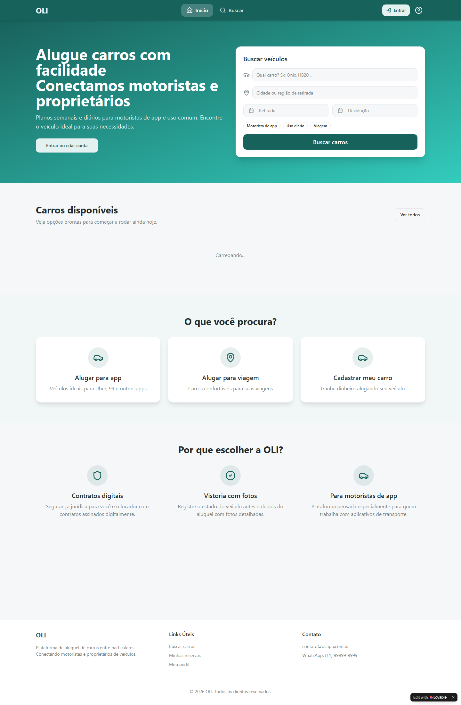
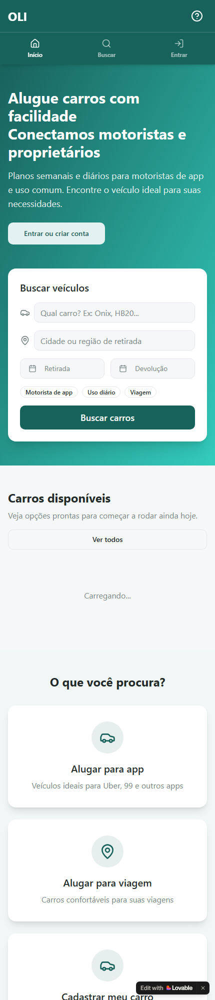
Escopo do produto
- Marketplace de aluguel com foco em motoristas e proprietários
- Busca, reservas, mensagens, perfil e fluxo operacional do aluguel
- Camada web pública + aplicativo mobile nativo separado
- Uso do mesmo backend/Supabase com clientes e interfaces próprios
Camada mobile
- Expo 53 + React Native 0.79
- Navegação com abas para início, busca, reservas, mensagens e perfil
- Supabase Auth no mobile com fluxo próprio
- Builds previstos para Android e iOS via EAS
- Deep links e autenticação social preparados no app
Automação e workflows
Snapshot atual da VPS aponta 28 workflows ligados ao universo OLI. Eles cobrem validações, vistorias, callbacks de pagamento e outros passos operacionais do produto.
- Validação de CNH
- Validação de carro
- Vistorias com IA para diferentes momentos do fluxo
- Caução/Asaas com callback validado ponta a ponta
Botões e pontos de entrada
Buscar carrosponto central de aquisição de demanda
Entrar ou criar contaonboarding e autenticação
Buscarnavegação para catálogo e filtros
Reservascamada de operação da jornada do usuário
Mensagensinteração entre as partes da locação
Perfilgestão de conta e leitura do estado do usuário
Observações de arquitetura
- Separação explícita entre frontend web e app mobile
- Backend compartilhado reaproveitado para reduzir retrabalho
- Proxy de webhook como ponto de integração com n8n
- Fluxos transacionais e de validação tratados como parte do produto, não como scripts isolados
04
Creator / Music Creator
Módulo de criação musical do ecossistema, com fluxo guiado por IA, múltiplas versões de processamento, integração com chat e backend de geração/entrega dedicado. É um case forte de produto orientado por prompt, runtime e renderização multimodal musical.
React
TypeScript
FastAPI
FluidSynth
DrumGizmo
SFZ/Soundfonts
n8n
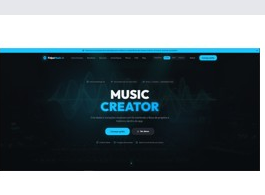
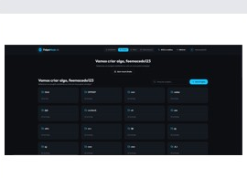
Experiência de produto
- Projetos próprios do Creator com histórico de mensagens
- Chat acoplado ao runtime para prompt, resposta e status
- Player global para mix/master produzidos
- Acesso separado por feature gating dentro do ecossistema
- Suporte a modos e variantes de criação/renderização
Camada de geração
- API FastAPI dedicada com backend validado por healthcheck
- Snapshot recente indica backend principal em fluidsynth
- Pipeline híbrido com camadas simbólicas, kits de bateria e bibliotecas de instrumentos
- Entrega final orientada por job, artefatos e variantes
Automação do Creator
Snapshot atual da VPS aponta 17 workflows ligados à família Creator. Eles cobrem orquestradores, processadores, contratos de entrega e fluxos compatíveis com diferentes modos.
- Orquestração por chat + runtime
- Fluxos separados para versões e compatibilidades distintas
- Validação por smoke reports e entregas públicas monitoradas
Botões e intenções principais
Criar projetoabre um espaço novo para geração
Promptcaptura direção estética, estrutura e energia
Upload vocal / referênciaalimenta o pipeline de criação/remix
V1 / V2 / GOD MODEtroca o contrato de geração e entrega
Playerescuta do resultado dentro do próprio fluxo
Statusfeedback do runtime em etapas longas
05
Video Anark AI
Plataforma de vídeo com API, workers e automações dedicadas para intake, status, digest, copilot e módulos como AutoCut. Este case mostra capacidade de construir produto orientado por multimídia, provider bridges e backend assíncrono com estado observável.
FastAPI
Celery
Redis
PostgreSQL
n8n
Workers
Provider bridges
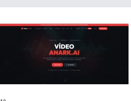
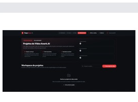
Estrutura funcional
- Copilot para sugerir fluxo/módulo ideal de acordo com o projeto
- AutoCut para cortes rápidos e produção orientada por ritmo
- Status monitor e digest para acompanhar saída e consolidar resultado
- API pública com health e telemetria básica exposta
Snapshot operacional
- Health pública recente apontando versão 2.7.0
- Worker com concorrência configurada em 4
- Retenção automática e fila observável por telemetria
- Container dedicado ativo na VPS, junto de frontend e APIs satélites
Workflows n8n
Snapshot atual aponta 13 workflows ligados à família Video Anark / Helena. Os nomes ativos mostram módulos como Copilot, Learn Skill, Project Digest, Status Monitor e Orchestrator.
O que esse case prova
- Integração entre produto visual, API e backend assíncrono
- Capacidade de operar provider bridges com regras de proxy e segurança
- Telemetria, status e retenção como parte do desenho do serviço
- Orquestração de múltiplos módulos especializados em uma única plataforma
06
Vitrinno
Produto social focado em música, pensado para artistas no MVP mas estruturado para expandir para outros perfis no futuro. O valor deste case está em provar capacidade de construir SaaS de produto, com auth, feed, catálogo, integrações, upload e monetização.
Next.js 16
React 19
TypeScript
Prisma
PostgreSQL
Stripe
S3 presign
n8n webhook
O que já está modelado
- Páginas principais para feed, studio, mensagens e auth
- Auth com JWT em cookie
- Posts, follows, catálogo, tracks e mensagens
- Upload com presign para storage compatível com S3
- Checkout e webhook com Stripe
- Integração social e publish via webhook dedicado
Arquitetura
- Next.js App Router + React 19
- Prisma como camada de modelagem e migração
- Zod, jose e bcryptjs na camada de validação/auth
- Deploy preparado para VPS com scripts próprios
Diferencial desse case
Vitrinno é o caso que melhor mostra capacidade de sair do zero para uma base de produto full-stack comercial, com visão de feed social, catálogo musical, integrações externas e monetização.
07
VPS, APIs, fluxos n8n e sistemas extras
Além dos produtos principais, existe uma camada operacional robusta que sustenta o ecossistema. O snapshot técnico da VPS em 21 de abril de 2026 mostrou um ambiente real com containers ativos, workers, n8n, APIs especializadas e rotas públicas respondendo.
/root/apps
Serviços ativos confirmados
- n8n principal + runners + workers
- MixMaster GOD MODE
- Creator GOD MODE API
- Stem splitter e magic volumes em versões legacy e GOD MODE
- Lunna Music Creator API
- Felpa machine learning service
- FelpaMusic frontend
- Video Anark API e frontends associados
Healthchecks verificados
- FelpaMusic público e Studio público respondendo
- n8n público respondendo
- MixMaster GOD MODE com health OK
- Creator GOD MODE API com health OK
- Stem Splitter GOD MODE e Magic Volumes GOD MODE com health OK
- Video Anark API pública com health OK
Famílias de workflows identificadas
MixMaster12 workflows
Creator17 workflows
OLI28 workflows
Video Anark13 workflows
Vitrinno1 workflow
Total Tour8 workflows
APIs e sistemas extras relevantes
- Magic Volumes API: análise de loudness e volumes por stem com fallback de guia/ref
- Audio Services GOD MODE: pacote paralelo com stem split, magic volumes e afinação sem quebrar legado
- Super Video Hub API: multiusuário para upload, transformação e publicação multicanal com workers e analytics
- FelpaMusic Mobile: app Expo/React Native com auth, projetos, chat, anexos e preview de mix/master
- Total Tour CRM: automações inbound/outbound ligadas a Kommo e agente de IA
O que foi removido por segurança
- Credenciais, senhas, chaves, tokens, secrets e variáveis sensíveis
- Payloads completos de execução e dados de clientes
- IDs internos que não agregam valor para recrutamento
- Hosts internos, nomes privados de banco, paths operacionais e detalhes de acesso
Como ler este portfolio
Este material não foi pensado como “galeria de imagens”, e sim como prova de capacidade em engenharia de produto. A leitura ideal é: interface do produto, capacidade técnica, integração entre camadas, operação viva e segurança na apresentação.
Fechamento
Leitura recomendada para recrutadores e gestores
O valor principal deste portfolio está na combinação entre produto visível, engenharia de integração e operação real. A camada de frontend por si só já mostra produto; a camada de APIs, workflows, filas, proxies e VPS mostra maturidade de execução.